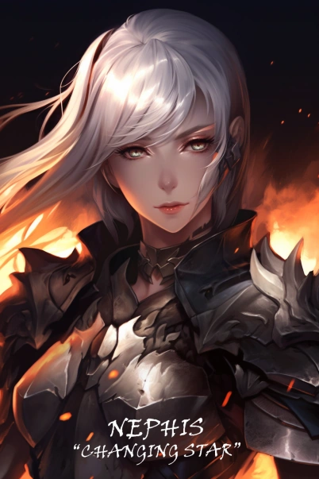

|
|
|---|
Depois de dois anos vagando pelo Reino dos Sonhos em solidão e em batalhas implacáveis pela sobrevivência, Nephis voltou ao mundo dos vivos como uma Ascended.
Mais tarde, ela foi vista por Rain vestindo um simples agasalho do governo. Seu cabelo prateado, no entanto, agora era longo e lustroso, emoldurando seu rosto e fazendo com que ela parecesse estranhamente feminina. Sua beleza era impressionante. De acordo com Rain, ela era uma jovem esbelta e graciosa, com uma pele de marfim impecável, olhos cinzentos impressionantes e uma estranha cor de cabelo branco prateado. Seu rosto era calmo, distante e estranhamente hipnotizante.
| Primeiro Pesadelo |
|---|
Em seu primeiro pesadelo, ela era filha de um faroleiro. Sua família vivia em uma bela torre na costa de um belo mar. Eles viviam juntos em harmonia, com humildade, mas sem precisar de nada. Seu pesadelo era, na verdade, um paraíso. Mas foi isso que o tornou tão difícil de superar, até mesmo impossível.
Ela procurou uma maneira de sair do pesadelo por um longo tempo. Mas, por mais que procurasse, não havia nenhuma. Quanto mais tempo ela ficava lá, mais difícil se tornava, a ponto de ela ter que se forçar a continuar procurando. Por fim, chegou um dia em que ela pensou que talvez pudesse ficar. Foi nesse dia que ela foi até o topo do farol para se encharcar de óleo e se incendiar.
Depois de muito tempo, ela se viu em uma caverna escura, aninhada em um casulo viscoso de seda preta. Ao seu redor, as pessoas estavam dormindo em casulos semelhantes, com os olhos abertos e sorrisos felizes em seus rostos vazios. Acima delas, havia uma criatura tão revoltante e abominável. Ela estava se alimentando de seus sonhos. De alguma forma, ela conseguiu se libertar e matar a criatura antes que ela recuperasse totalmente os sentidos.
